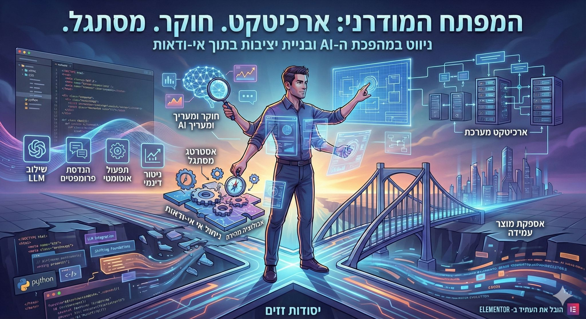

נפתחה אצלנו משרה - מפתח AI בצוות של אנג׳י (הצ׳אט אייג׳נט של אלמנטור)
פורסם במקור ב LinkedIn
נפתחה אצלנו משרה - מפתח AI בצוות של אנג׳י (הצ׳אט אייג׳נט של אלמנטור)
וזה גרם לי לנסות לתאר לכם מהן דרישות המקצוע של מפתחי תוכנה בימינו:
הדבר שהכי בולט כשקוראים את הדרישות למפתח היום בעקבות מהפכת הבינה המלאכותית זה שהמקצוע כבר לא יושב בתוך משבצת אחת, הוא הפך להיות תפקיד שמחזיק כמה עולמות בו זמנית -
זה מתחיל בצורך להבין לעומק מוצרים שחיים בתנועה מתמדת, עם מערכות שמשרתות מאות אלפי משתמשים וצריכות להגיב בשיחה אנושית וכל זה קורה בדיוק בזמן שבו המודל מאחורי הקלעים משתנה בקצב שאף ספר לימוד לא עומד בו
מפתח מודרני נדרש לחשוב כמו ארכיטקט
להתנהל כמו חוקר ולהכיר היטב את גבולות היכולת של מכונה
ולזוז כמו מישהו שמבין שהידע של היום בבוקר יכול להשתנות עוד שבוע והוא צריך להתאים את עצמו ואת המערכות בהתאם
הוא צריך להכיר שתי עולמות מקבילים -
גם מה קורה בשכבות של ניטור, עלויות, ביצועים ועבודת תקשורת בין שירותים
וגם מה קורה בתוך מודל של שפה שגורם לכל אחד מהסעיפים הנ״ל לקבל פרשנות שונה ומימוש שונה עם כלים שונים כשמדובר בקוד דטרמניסטי קלאסי וכשמדובר בשכבת ה-AI
הנה דוגמא קטנה:
ניטור צד שרת יכול להתבצע עם Sentry. איך מנטרים תשובות של LLM?
(אנחנו בחרנו ב-LangFuse)
ככל שחברות בונות סביב סוכנים חכמים ומתייחסות אליהם כאל שכבת תפעול חדשה התפקיד מתרחב.
הוא כולל ניסויים יומיומיים ביכולות חדשות, הערכה של מודלים, וניטור מסוג חדש - כזה שמחזיר בכל פעם תשובה שונה לאותה שאלה
זו אולי הדרישה העמוקה ביותר של התקופה
לדעת לעבוד בתוך אי ודאות מתמשכת
לא להיבהל מזה שמודל משנה את התנהגותו
אלא לבנות סביבו מוצר שממשיך לעמוד
גם כשהיסודות עצמם זזים
אז פיתוח מערכות שעוטפות מודלים הופך לסטנדרט בסיסי בתעשיה ולצדו צומחים כלי פיתוח מבוססי בינה שמחליפים חלק משמעותי מהעבודה הידנית שהמפתח הכיר. ובמציאות הזו, המפתח שהיה רגיל להתמחות בשפה או בפריימוורק, מגלה שהדרישות השתנו - הוא נדרש ליכולת ניסוח גבוהה ולאפיון מדויק של כוונות ולהבנה עמוקה של הדרך שבה מודל מפרש הוראות
זה כבר לא רק לכתוב קוד נקי או להתמחות בניואנסים של שפה, אלא לבנות יציבות מעל קרקע שעדיין זזה, לשלב יכולות שעדיין לא הבשילו ולהחזיק מוצר חי בזמן שהטכנולוגיה שתומכת בו משתנה מתחתיו
העולם נהיה מאתגר יותר למפתחים לא כי ״הבינה הולכת להחליף את המפתחים״, אלא כי היא מביאה איתה דרישות חדשות מהמקצוע.
--
אם יש לך את היכולות האלה אז נפתחה משרה כזאת באלמנטור (חם מהתנור!)
מחפשים מפתח בינה מלאכותית בכיר שיוביל פיתוח מערכות מבוססות LLM ויצטרף לצוות שבונה בימים אלה את Angie - סוכן שיחה מתקדם שמשמש כשכבת תפעול לבניית אתרים והניהול שלהם
זה תפקיד למי שמסוגל לנוע מהר, לפרוץ דרך טכנולוגית ולבנות דור חדש של כלים שמגדירים מחדש איך יוצרים ומנהלים אתרי וורדפרס.
מעניין אתכם? קישור למשרה: https://lnkd.in/dtY6aKxY
